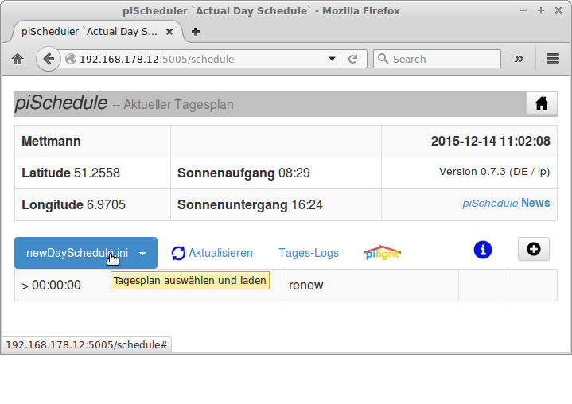

piSchedule Setup vers.0.7.5.1 2017-01

piSchedule ist ein Python Programm. Es läuft auf dem Raspberry mit einer Installation von pilight 6.0 oder 7.0. pilight muss für das erfolgreiche Einrichten von piSchedule laufen!
Das Einrichten und ein Update aller Komponenten erfolgt mit zwei Schritten:
- Auf die nachstehende SETUP Box klicken und mit
[Strg][C]kopieren
SETUP - Dann am Systemprompt des RaspberryPI einfügen und ausführen mit
[Strg][Hoch][v]und[Eingabe]
Hinweis Es werden keine INI Dateien geladen/überschrieben.
___piSchedule Setup vers.2017-02 __
** piSchedule Setup -- Loading [version] list!
0: Update Python Libraries only
1: piSchedule751
Select installation option: 1
Dieses Auswahlmenü bietet unterschiedliche Versionen an, hier
-
0: Python - Libraries loading/updating only -- Es erfolgt nur die Installation der Python Module, kein piSchedule Setup.
-
1: -- Die jeweils aktuelle Version von piSchedule.
(Das aktuelle Menü kann weitere Versionen beinhalten)
Hier ein Beispiel Setup mit der Auswahl "1" der o.g. Liste, sie beginnt automatisch und schließt ab mit:
*** piSchedule - ready to start ***
*** Use ***
$ sudo service piSchedule start
*** Check with ***
$ sudo service piSchedule status
The listing needs a line with a valid
addressing for server:port
** piSchedule {server}:{port} : >>192.0.10.1.5001<<
('192.0.10.1.5001' is an example only!)
If failed, check with the following commands:
$ cd ~/piSchedule751
('piSchedule751' is an example only!)
$ sudo service piSchedule restart
$ sudo service piSchedule status
$ sudo /home/pi/piSchedule751/piPrefs.py
*** With valid results move over to your browser ***
*** and start the 'piSchedule' home page using ***
*** the prompted {server}:{port} ***
pi@RPI2 ~ $
Nun kann piSchedule gestartet werden mit den oben angegeben Befehlen.
Mit der Eingabe der gezeigten {server}:{port} Adresse in der Adresszeile des Browsers wird piSchedule geöffnet:

piSchedule Steuerungsdateien (INI Dateien)
Die Schaltzeiten für die Schalter sind in einfachen Textdateien mit der Endung .ini erfasst. Diese INI.Dateien befinden nach der Erstellung in dem jeweiligen piScheduleXX Verzeichnis. Ein erneutes Setup mit dem selben Verzeichnis löscht diese INI.Dateien nicht. Anderesseits ist es ggf. erforderlich die INI.Dateien bei Versionswechsel (siehe nachstehend) in ein neues Setup zu übernehmen.
piSchedule Versions Wechsel
piSchedule besteht im wesentlichen aus Python Modulen, die mit dem Setup auf den Raspberry kopiert und mit service piSchedule start|restart gestartet werden. Ein Wechsel zu einer anderen piSchedule Version erfolgt einfach durch ein erneutes Setup mit einer anderen Auswahl im Setup-Menü.
Zum nachträglichen Wechsel zwischen verschiedenen Version ist es nur notwendig in das entsprechende Verzeichnis zu wechseln und dann in jedem Fall ein Setup Skript auszuführen:
cd ~/piScheduleXX./setScheduleService.shWechsel zu älteren piSchedule Versionen
Das beschriebene Skript setScheduleService.sh existiert dort nicht. Vor der Re-Aktivierung einer älteren piSchedule Version ist das Skript durch einfaches Kopieren mit cp /quelldir/piScheduleSetup.sh ~/alteVersion/piScheduleSetup.sh in das jeweilige Verzeichnis zu übertragen und dann dort auszuführen.
piSchedule Library Programme
Für piSchedule sind die folgenden Python Module erforderlich und werden mit SETUP installiert:
- PIP Python Installer
- Date/Time für die flexible Handhabung dient [dateutil]. Dies beinhaltet einen Praser, so werden einfach formatierte Datum/Zeitangaben zu vollen 'date/time' Objekten gewandelt.
- Zeitsteuerung arbeitet mit Advanced Scheduler vers.3
- Location/Geolocation/Sunrise/Sunset - Location/Geolocation/Sunrise/Sunset Um den Raspberry Installationsort zu finden wird 'http://ip-api.com/json/' genutzt; ist diese Seite nicht verfügbar oder wird keine gültige Angabe geliefert, erfolgt eine Abfrage mit 'https://maps.googleapis.com/maps/api/geocode/json' statt dessen.
Hinweis: In vorherigen piSchedule Versionen wurde ephem benutzt. Dies ist ersetzt durch ein lokales Python Module.
- Web Pages sind unterstützt mit [bottle] und [bootstrap]